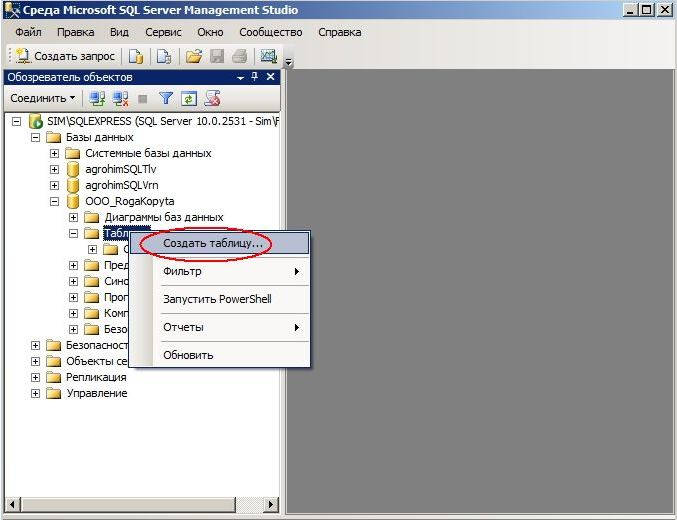
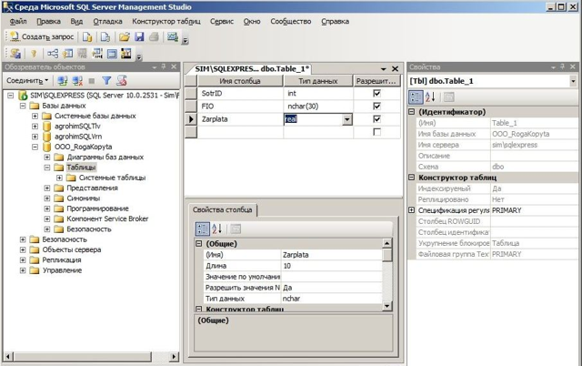
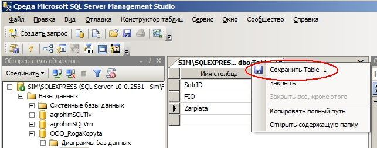
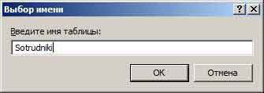
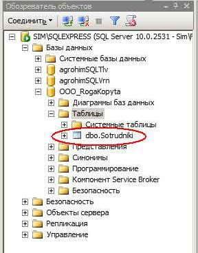
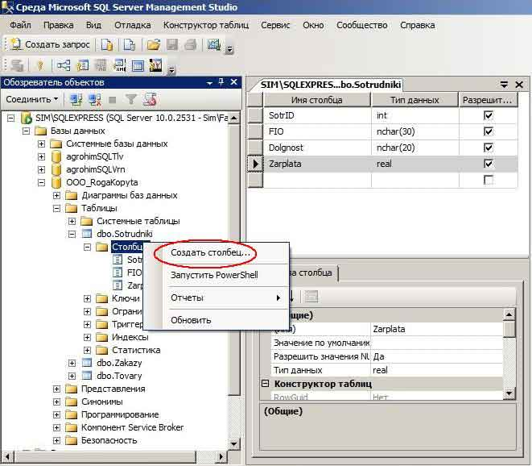
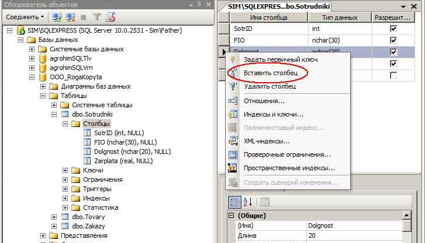

В предыдущем пункте мы научились создавать новую базу данных в MS SQL Server. Однако, для реальной работы с базами данных этого будет маловато. Дело в том, что информация в базе данных храниться в таблицах, которые являются отображением некоторых логических сущностей. В нашей учебной базе OOO_RogaKopyta, которая будет моделировать работу некой коммерческой фирмы по продаже товаров, будут необходимы, как минимум, пять таблиц:
Ну вот, приблизительную номенклатуру таблиц прикинули. Конкретную структуру таблиц с необходимыми полями будем задавать во время их создания. Сейчас аккурат и займёмся этим моментом. Опять запускаем SQL Server Management Studio, становимся на нашу БД, выбираем ветку Таблицы и по правой кнопке щёлкаем по пункту меню Создать таблицу:

Для начала, попробуем создать таблицу, в которой будем хранить данные о сотрудниках. Пусть она будет иметь три следующих поля - SotrID (идентификатор сотрудника), FIO (ФИО сотрудника) и Zarplata (Зарплата). Для выполнения этой задачи в колонках Имя столбца и Тип данных заносим соответствующие реквизиты полей таблицы:

Для сохранения введённой информации о структуре таблицы щелкаем правой кнопкой по ярлыку с именем таблицы по умолчанию:

В следующей форме задаём имя таблицы:

Теперь, после обновления, в Обозревателе объектов можно увидеть в списке таблиц только что созданную таблицу Sotrudniki:

Нашу первую таблицу в MS SQL Server успешно создали! (пока не обращайте внимание на префикс dbo в имени таблицы. Он означает владельца таблицы - database owner).
Естественно, если мы что-то забыли, всегда можно вставить в структуру таблицы новый столбец. Для этого становимся на нужную таблицу, жмём на правую кнопку мыши и выбираем в контекстном меню Создать столбец:

Затем становимся на строке столбца, перед которым желаем вставить новый и по правой кнопке кликаем по Вставить столбец:

Прим. Создать структуру новой таблицы можно путем копирования из уже существующей по контекстному меню CREATE. Как- смотрите по этой ссылке
Удалить таблицу из базы данных чрезвычайно легко. Это можно сделать по пункту Удалить из контекстного меню по правой кнопке мыши или используя команду Drop table <имя_таблицы>.
Всем успехов в изучении MS SQL Server!